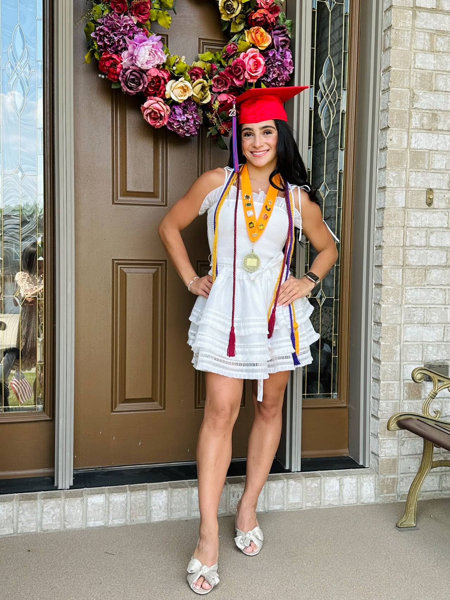
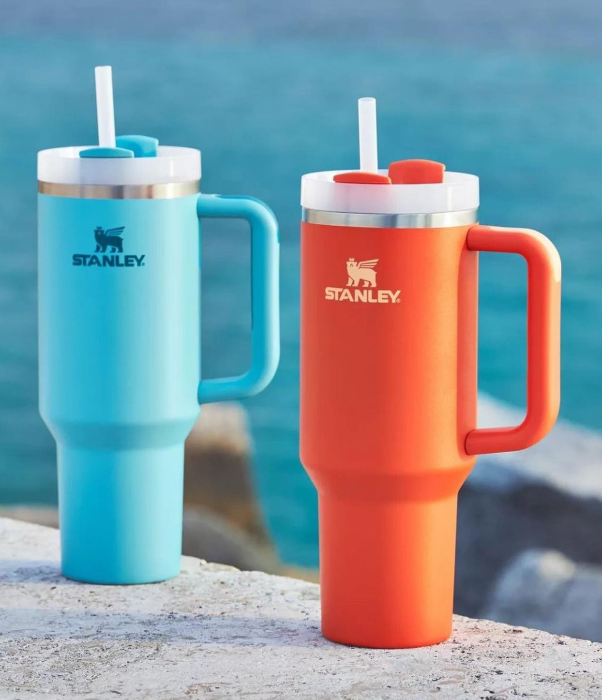
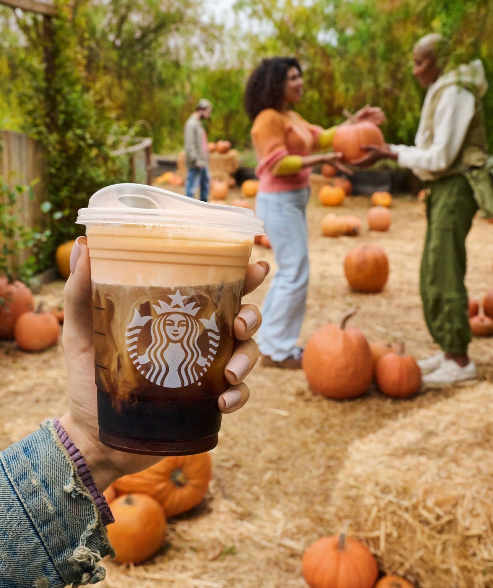
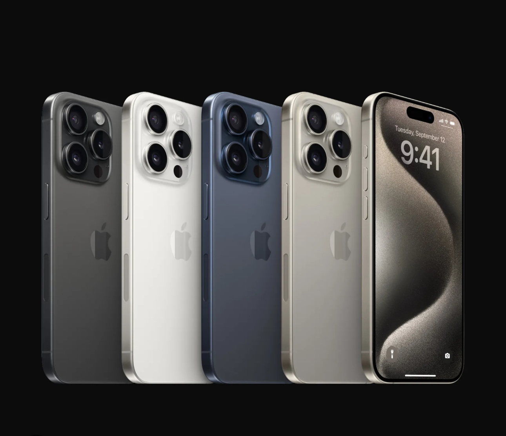
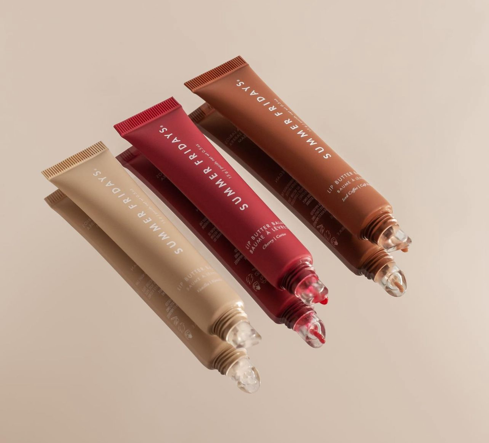
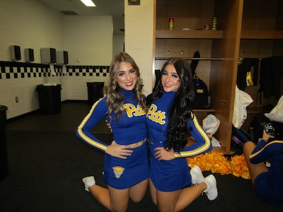
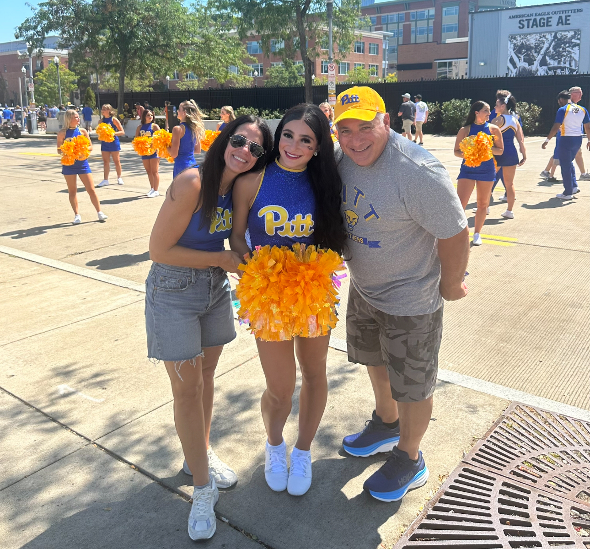
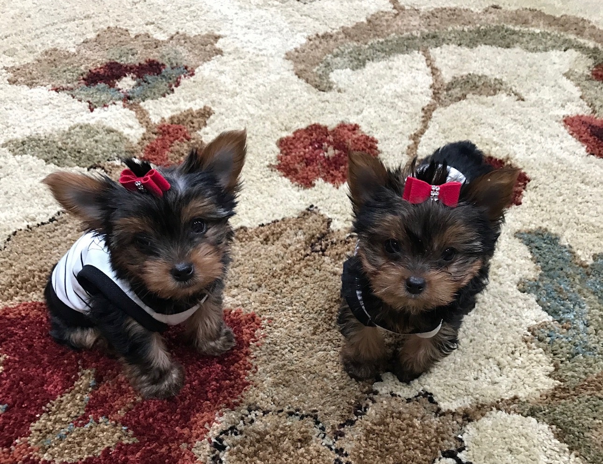
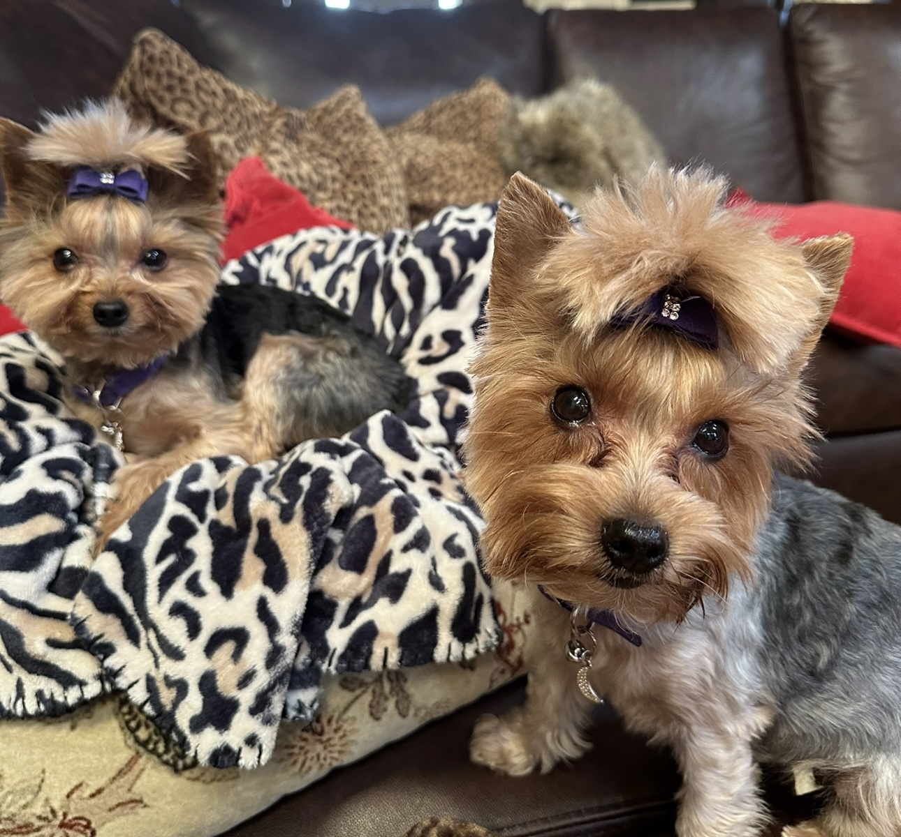

Hi Everyone!
I am Valentina Gulino!
Field of Study
I am a freshman here at the University of Pittsburgh on the pre- Rehabilitation Sciences track. I have suprisingly enjoyed taking General Chemsitry II, Biology II, Social Psychology and many other sciences in my time at school. I am even in a course called "Social Contol and Deviance" this semester that I am really enjoying as I am intrigued by the basis behind what we consider to be normal in our society. I am working to earn the Conceptual Foundations of Medicine certificate as well. My major has not changed yet, being that I am only a freshman. I always knew that I wanted to pursue a career in the healthcare field, but I know that I have to ability to pursue any area of study being that I am a freshman.

Knowledge, Tools, and Skills
I do not have an extensive history of classes that will leverage me in this class. I have taken a lot of STEM courses that do not require me to work with code or make coherent designs. I have learned problem solving skils, critical thinking skills, and analytical skills that will help me succeeed in this course. I would say that I consider myself to be both a thinker and a critic. I have experience with solving complex math problems, as well as thinking through challeneging concepts in many of my classes. I have also criticially looked at work in many of my classes to enhance my own skills as a student. A lot of the media that I use is social media because it is a popular source of communication with my peers. I become interested in looking at these social media accounts so that I can be aware of the latest trends and news. It is also a great way for me to stay in touch with my friends. I wish to learn more about the design aspect of media in this course. I want to familiarize myself with the code language, and become better at designing things. These skills will help me in future courses when making Powerpoints or posters. I believe that there is sort of a science behind what makes certain designs appealing to the eye, so I feel as though I can incorporate my own knowledge into the context of this course.

What is good design?
I believe that in a sense, a good design can be based on your own judgement, preference, and perspective. If you have a favorite color, I believe you are more inclined to like a design of that color, for example. Thus, a good design exists on a continuum. To me, a good design is something that uses a broad range of complimenting colors. It may also have a catchy slogan for the brand to attract customers. An aesthetic product is likely to be bought if it is satisfying to look at. Something that is minimalistic and sleek is a better design to me than something that is overpowered with design. A good design of a product should be compatible and durable to last for an extensive period of time. Regarding my own design interests, I feel as though I am intersted in designs that appeal to my eye. A website that uses a color scheme is appealing to the eye. I also find that having less on a website page is actually more beneficial. If I am shopping for clothes, it is easier to look at a webstite that has less dropdowns than if it has one for every category. The Lululemon website is a great example of this idea. It uses a still,white background, and it has easy-to-read titles outlining the clothes. When you hover over the item you want, it tells you the price, the sizes, and it even flips the model around so that you can see the back. This is important and significant because it is about accessibility and convenience of the customer. The website is appealing to the eye, so I am more likley to use it. In turn, they are able to get more business from me as a customer. If I am looking at product design, I want to see something that has a wide range of colors to choose from, and an aesthetic look. I want it to look sleek if I am using it, and I want to enjoy the way it looks as well as its function. A perfect example is a Stanley cup water bottle. The water bottle that I use from this brand has a matte finish that is appealing to the eye. It is also very compatible to use. It withstands scrapes and falls, and it keeps my water cold all day. This is significant because it is durbale and easy to look at. That is what makes this brand so popular. When looking at designs, I would say that the look is most important to me. Even if I know that one brand may have a better product, I am still most likley to select the one that looks more appealing.




Good Designs that showcase a "less is more" design.
In the Future
After I receive my undergraduate degree, I plan to apply to graduate school in one of the healthcare professions. I am continuing to shadow healthcare professionals such as doctors, dentists, and physician assistants to see where I ultimately see myself. As a competitive dancer who tore her ACL in highschool, I knew I wanted to enter the healthcare field after my experience. The extensive physical therapy and the surgeries made me realize that I can not see myself anywhere else. Speaking of dancing, I am also on the University of Pittsburgh's Dance Team! I get to perform at the football and basketball games, and I have so many opportunities to volunteer and help the community. I realized that I love to help others and make an impact on their life; this is something that I will do in the healthcare field. My mom and dad have made an impact on this choice as well because seeing the experiences that they go through with healthcare professionals allowed me to realize that I also want to change the lives of my patients in a positive way. My sister is a senior here at Pitt, also on the dance team, and she is applying to graduate schools currently. Her interest into the healthcare field has also inspired me to want to join the healthcare profession. I also have two Yorkshire Terriers named Luna and Stella. Dogs really are a man, or a woman's, best friend. The psychology behind the joy that animals can bring us is something scientific related. The work that we do in this space will allow me to broaden my creative abilities while challenging me to try something new. I feel as though the skills that I learn in this course will allow me to succeed in any course. I can even develop a new interest into this design process which can be an asset to my future career choices.





generated by Pitt Fuego
Why make a spark when you can light a fire?